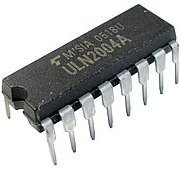
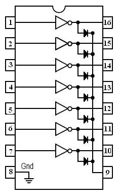
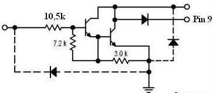

Микросхема ULN2004A
Микросхема ULN2004A - 7-канальный коммутатор мощных нагрузок на основе транзисторов Дарлингтона (составных) с открытым коллектором. Коммутаторы содержат защитные диоды, что позволяет коммутировать индуктивные нагрузки (реле и т.п.). Коммутатор ULN2004 рекомендуется для сопряжения мощных нагрузок с микросхемами КМОП-логики (например серии 40xx).

Рис. 1 - Внешний вид микросхемы ULN2004A

Рис. 2 - Расположение выводов микросхемы ULN2004A
| Максимальное выходное напряжение | 50 В |
| Максимальное входное напряжение | 30 В |
| Максимальный коммутируемый ток | 500 мA |
| Максимальный базовый ток управления | 25 мA |
| Выходной ток утечки (при +25°C, не более) | 50 мкA |
| Входное напряжение включения (не более) | 8 В |
| Входной ток включения (не более) | 0,5 мA |
| Коэффициент усиления по току (не менее) | 1000 |
| Максимальная рассеиваемая мощность: | |
| одного ключа | 0,75 Вт |
| всей микросхемы | 1,25 Вт |
| Падение напряжения в открытом состоянии: |
|
| при Iк=100 мA | <1,1 В |
| при Iк=350 мA | <1,6 В |
| Время включения (не более) | 1 мкс |
| Время выключения (не более) | 1 мкс |
| Диапазон температур | -20..+85°C |
| Аналог | К1109КТ23 |

Рис. 3 - Внутренняя схема одного канала ULN2004A